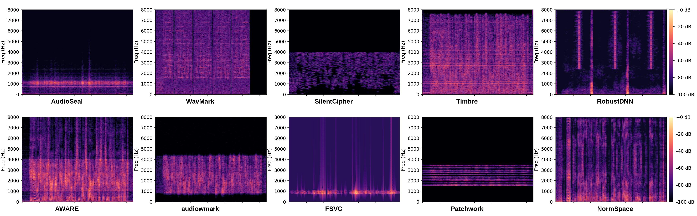

Watermark structure explains robustness
The taxonomy table below summarizes design factors that relate to robustness, including message repetition, frequency range, and training distortions.
| Method | Model Type | Message Repetition | Frequency Range (Hz) | Training Distortions | Watermark Embedder |
|---|---|---|---|---|---|
| RobustDNN | AI | Frame level | 0-8000 | 3 | Encoder network |
| Timbre | AI | Frame level | 0-8000 | 1 | Encoder network |
| AudioSeal | AI | Frame level | 0-8000 | 14 | Encoder network |
| WavMark | AI | Block level | 0-8000 | 10 | INN |
| SilentCipher | AI | Frame level | 0-4000 | 6 | Encoder network |
| AWARE | AI | None | 0-8000 | 0 | Adversarial optimization |
| audiowmark | Traditional | Block level | 861-4307 | N/A | FFT bin |
| FSVC | Traditional | None | 1088-1448 | N/A | DCT coefficient |
| Patchwork | Traditional | Layer level | 3000-7000 | N/A | DCT coefficient |
| Norm-space | Traditional | None | 0-8000 | N/A | DCT coefficient |
The spectrogram below provides a visual comparison of where watermark energy appears across the selected methods.
